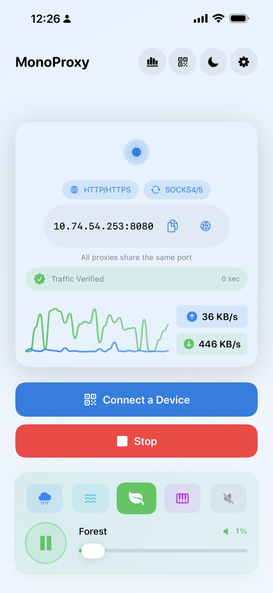
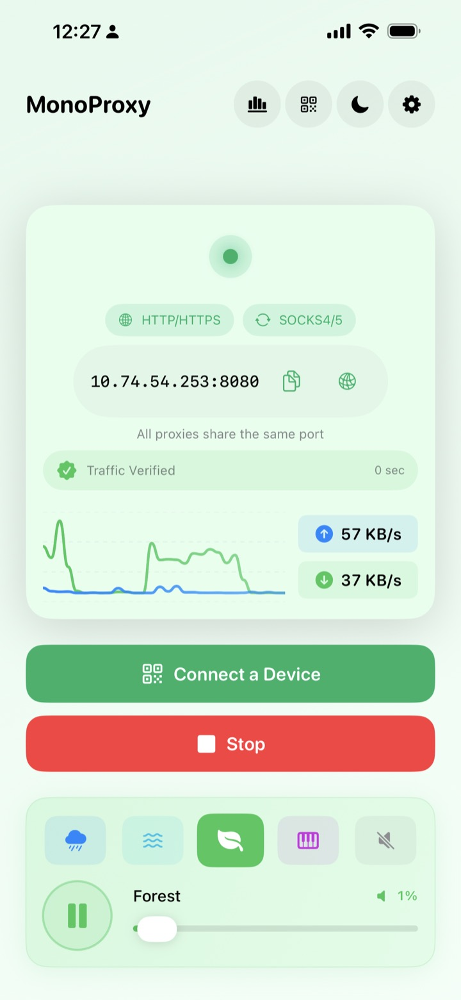
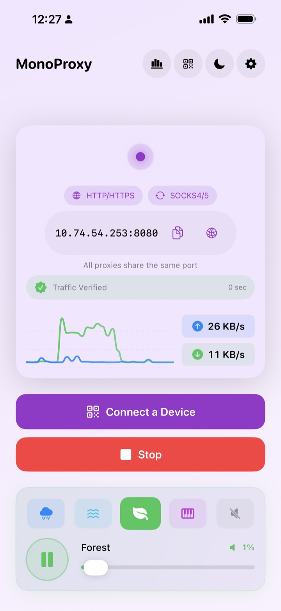
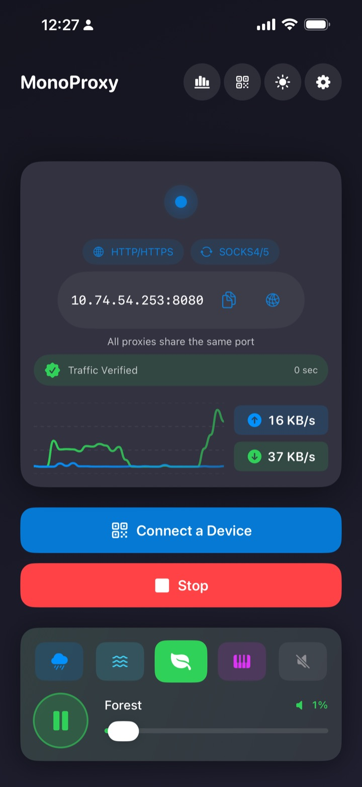

Live metrics
Statistics that explain the session
Follow runtime, connections, upload, download, peak speed, averages and the recent traffic trend in one view.

Turn your iPhone into a local HTTP, HTTPS and SOCKS proxy hub. Share one reachable address with Macs, PCs, tablets and test devices, then see when real traffic arrives.


MonoProxy keeps “the port is open” separate from “a client is connected” and “traffic really moved,” so every status has a precise meaning.
Select the Wi-Fi or LAN address your client can reach, then start the service.
Copy the address, scan a configuration, or follow the platform guide.
Watch Listening become Client Connected, then Traffic Verified after bytes transfer.
Run MonoProxy once, then point the computers, tablets and test devices already on the same local network at one endpoint.

The latest MonoProxy interface keeps configuration simple while exposing the details that matter when you need them.
Follow runtime, connections, upload, download, peak speed, averages and the recent traffic trend in one view.
See bounded, on-device upload and download totals by domain or IP without saving request paths.

Inspect active and completed host connections, durations and timestamps. History remains local and clearable.

Choose a client platform, copy the active values, scan a QR configuration, and follow concise steps without guessing which address to use.

Change language, theme, animations, port, SOCKS support, authentication and local history controls from one organized screen.

HTTP, HTTPS, SOCKS4, SOCKS4a and SOCKS5 share the same host and port. MonoProxy detects the client protocol automatically.
Choose a color that suits your workspace without changing how the connection workflow behaves.
Bright, calm and focused

Expressive without distraction

Comfortable in low light

MonoProxy runs on your iPhone without an account, analytics SDK or remote backend. It relays encrypted connections without installing certificates or inspecting content.
Proxy credentials remain on the device and never appear in connection logs.
No profiling, third-party analytics or remote traffic collection.
HTTPS tunnels are relayed without certificate installation or decryption.
Local host history and site totals are bounded, optional and clearable.
Start once, connect your devices, and see when real traffic arrives.